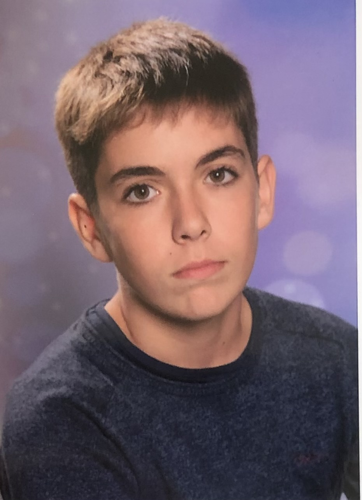

Étudiant en journalisme à l'EFJ Bordeaux.📚🎙🎥
A l'issue de mon cursus à l'EFJ, j'envisage de poursuivre en master spécialisation sport à l'IEJ. Mon objectif professionnel étant de devenir journaliste sportif.🎾⚽️
EFJ BORDEAUX - 2021/ 2024
Bachelor en journalisme plurimédia
LYCÉE SAINT-JOSEPH - 2018 / 2021
Baccalauréat général ; Mention Assez-Bien